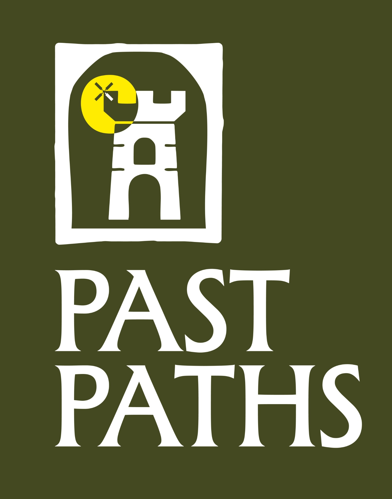

We create the tour
We research, write and produce a bespoke digital audio experience for your site.

Past PathsDigital History ExperiencesPast Paths
Bespoke digital audio experiences for Britain's heritage organisations.
We research, write and produce engaging historical content that visitors purchase through our mobile app, generating additional income for heritage partners without any upfront cost.
What is Past Paths?
Past Paths creates carefully researched digital audio experiences for castles, churches, museums, archaeological sites, historic houses and heritage landscapes across the United Kingdom.
Each experience is tailored to the individual site, helping visitors explore at their own pace while creating a new revenue stream for the organisation.
How it works
We research, write and produce a bespoke digital audio experience for your site.
Visitors buy the experience through the Past Paths app and explore at their own pace.
Income from each sale is shared with the heritage partner through clear reporting.
For heritage partners
Past Paths covers the cost of creating the experience. Your organisation receives a professionally produced digital product and a share of the revenue from every sale.
For visitors
Past Paths experiences are designed for visitors who want more context, atmosphere and storytelling during their visit, without needing to join a scheduled guided tour.
Contact
We'd be delighted to discuss how a digital history experience could work for your site.
hello@pastpaths.co.uk